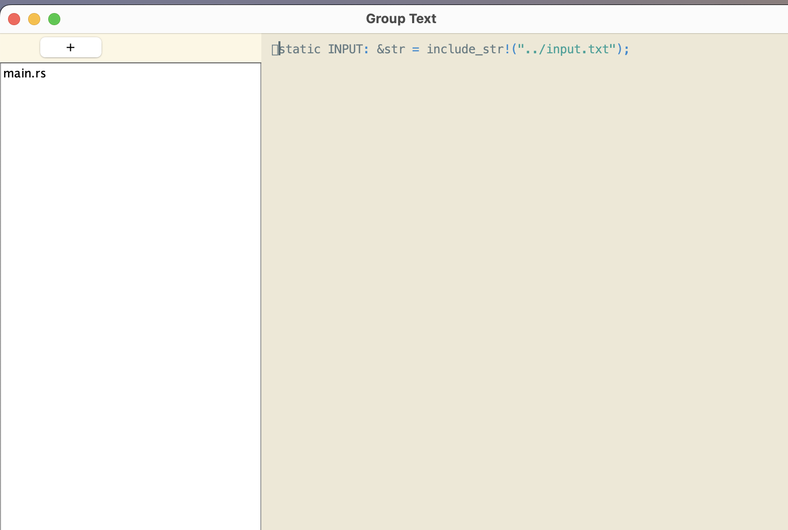
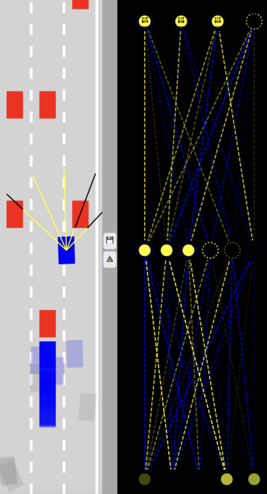

Work and Career Dreams
Professions of Interest:
- Software Engineer: Building scalable applications and systems that solve real-world problems.
- Systems Programmer: Working on operating systems, compilers, and low-level software that powers modern computing.
- Machine Learning Engineer: Developing AI systems and neural networks to create intelligent applications.
Dream Employers:
- Google: Leading technology company focusing on search, AI, cloud computing and other technologies.
- Microsoft: Software giant developing operating systems, cloud services, and gaming platforms.
- Apple: Company creating electronics, software, and services.
Job Search Resources:
- LinkedIn Jobs: Networking platform with tech job listings and company insights.
- Glassdoor: Company reviews, salary information, and job listings.
- GitHub Jobs: Developer job board integrated with github.
Personal Projects
MOS (My Operating System)
Rust, C, Assembly, ZigA simple operating system built from scratch. Features bare-metal x86_64 development with custom target configuration.
GroupText
JavaA collaborative text editor that allows multiple users to edit documents simultaneously in real-time, similar to VS Code's Live Share extension.

Advent of Code Solutions
Rust, Java, C++, JavaScript, PythonA collection of solutions to Advent of Code challenges spanning multiple years (2015, 2016, 2020, 2022-2025). Demonstrates problem-solving skills across multiple programming languages.
Texture
C, CMakeA terminal-based text editor written in C. Features syntax highlighting, customizable keymaps, and a modular architecture with custom data structures (vectors, dictionaries).
Self-Driving Car Simulator
JavaScript, HTML5 CanvasA self-driving car simulation using neural networks and machine learning. Features ray-casting sensors for collision detection, traffic simulation, and a neural network that learns to navigate roads.
Based on FreeCodeCamp's Neural Networks tutorial by Radu Mariescu-Istodor.

Number recognition machine learning trainer
Machine LearningA neural network-based digit recognition system that classifies handwritten numbers from 32x32 pixel images. Trained on labeled datasets to accurately identify digits 0-9 using image classification techniques.